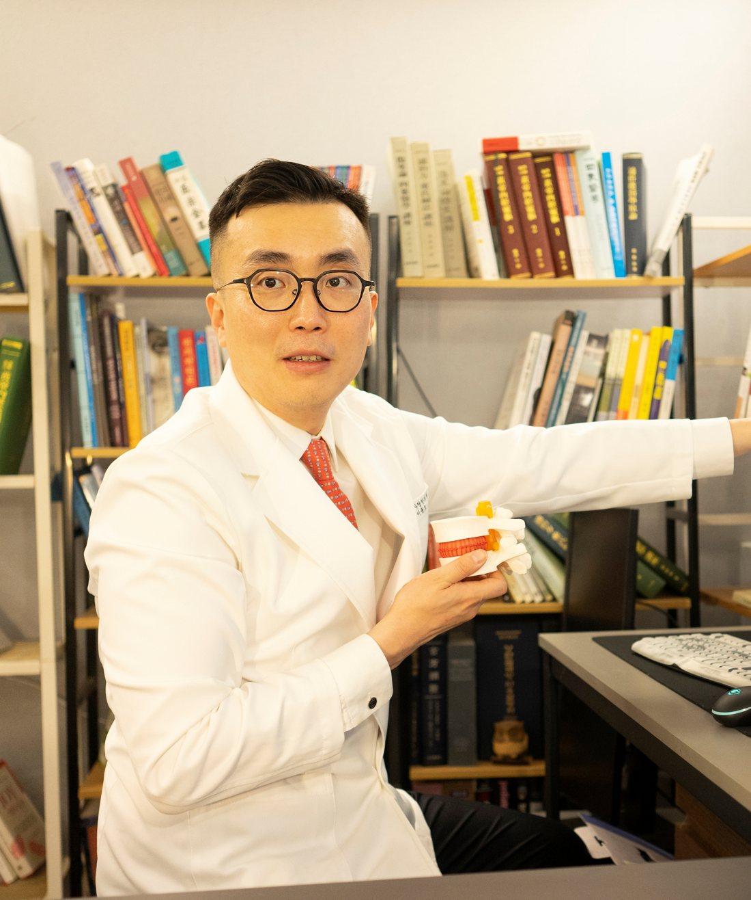
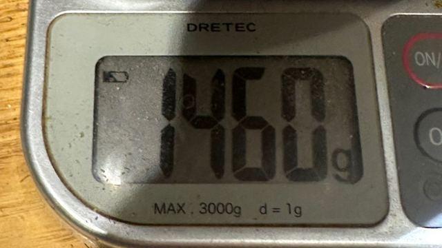
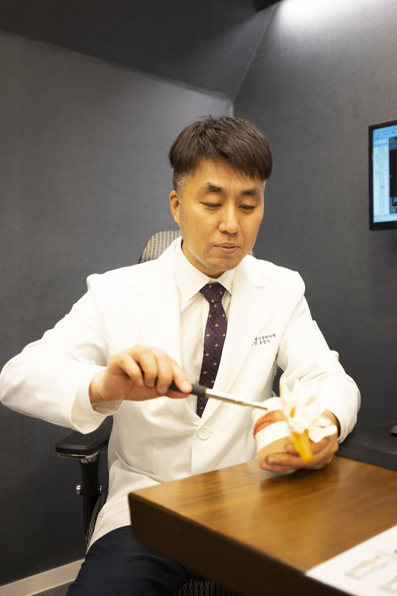
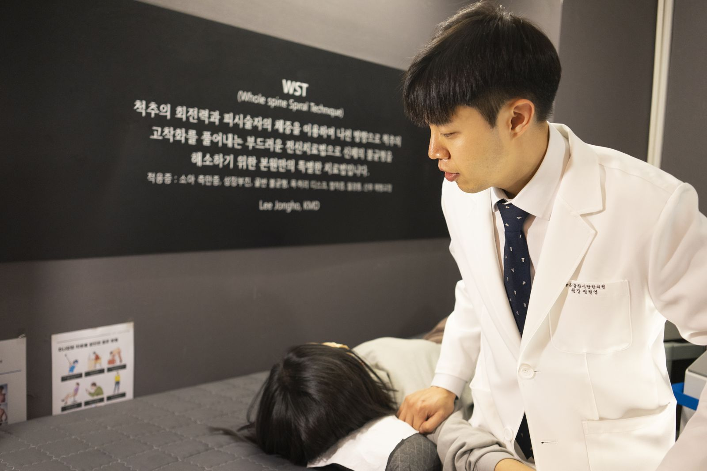

이종호 대표원장
전문 분야: 뇌기능 재활 · 당뇨·대사증후군 · 다이어트
- 원광대학교 한의과대학 졸업, 2013년 상도동 개원
- 중국 중의학대학 해부학·침도학 연수
- 동작구 어르신 치매예방, 찾아가는 실버한방케어, 한의약 난임치료 지원사업 지정 한의사
- 은로초등학교·중대부중학교 학교 한의사
- 방송 고정패널: MBN 「건강한의사」(2021), 「한방이 답이다」(2022), EBC 「여의보감」(2023)

인사말 · 의료진 · 진료 원칙

안녕하세요. 좋은꿈참사랑 한의원 노량진점 이종호 대표원장입니다.
한의학은 몸의 구조와 기능이 틀어진 부분을 살펴 치료하는 학문입니다. 이 안에는 신체와 정신의 균형을 조율하고 통합하는 관점이 있습니다.
심신의 연결은 감정을 통해 이루어집니다. 좋은꿈은 심신의 통합적인 치료와 감정의 안정을 오랫동안 연구해 왔습니다. 노량진점에서는 척추와 관절의 틀어짐을 살피는 추나와, 스트레스를 줄이고 마음을 안정시키는 상담을 꾸준히 해 왔습니다.
다양한 스트레스 요인을 이해하는 상담, 틀어진 구조를 살피는 추나, 근육의 긴장을 살피는 침구치료, 몸의 기능과 균형을 살피는 한약 상담을 통해 원인을 함께 찾고 건강한 몸과 마음을 유지할 수 있도록 돕겠습니다.
이야기가 있는 곳, 사람의 회복 과정을 함께하는 곳이 되겠습니다. 가족을 대하는 마음과 믿음으로 한 분, 한 분 진료하겠습니다.
좋은꿈참사랑 한의원 노량진점 대표원장 이종호
좋은꿈참사랑한의원 노량진점은 좋은꿈 네트워크의 한의원입니다. 다양한 원인과 증상을 복합적으로 살펴, 한 분 한 분에게 가장 맞는 치료법을 찾습니다.
회복은 한 번에 오지 않고, 이어서 들을 때 시작됩니다.




원장님이 실제 조제 때 찍은 사진입니다(2026년 7~11월). 환자분 정보가 적힌 이름표는 잘라 냈습니다. 원내 탕전 기록 더 보기 →


지점마다 운영 중인 클리닉이 다릅니다. 필요한 진료는 방문 전 전화로 문의해 주세요.

전문 분야: 뇌기능 재활 · 당뇨·대사증후군 · 다이어트

전문 분야: 추나요법 · 통증재활

노량진점 진료원장으로 진료합니다.



사람의 가장 기본적인 두 욕구인 수면욕과 식욕이 흔들리면 몸의 리듬이 함께 흔들립니다. 좋은꿈참사랑한의원 노량진점은 이 두 가지를 가장 먼저 살핍니다.
잠이 부족하면 식욕이 커지는 경향이 있는 것으로 알려져 있어, 두 문제는 함께 오는 경우가 많습니다.

회복은 증상이 사라지는 것만이 아니라, 일상의 리듬이 돌아오는 것입니다.